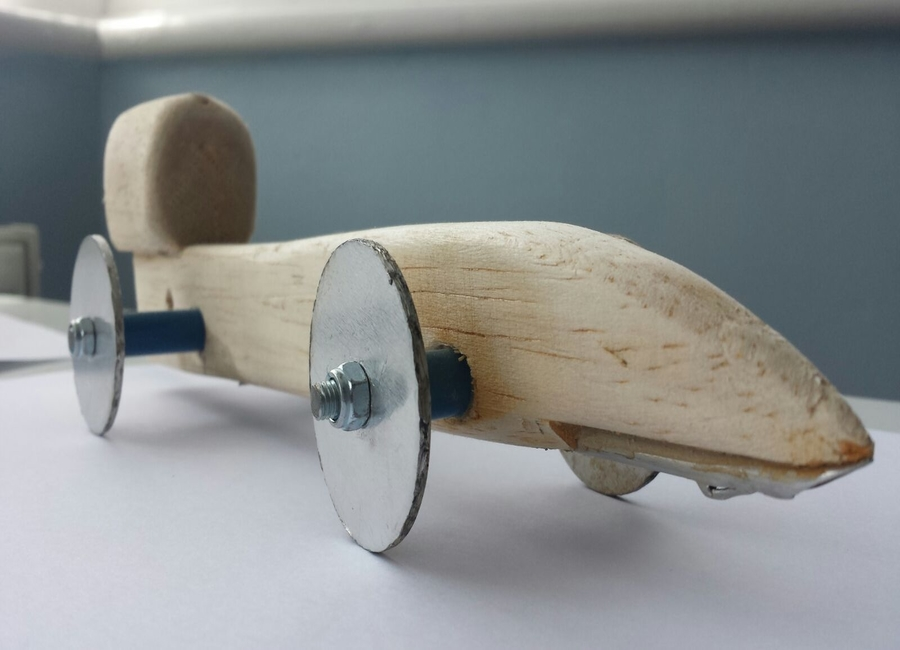

Dhiresh Nathwani
Hardware Hacker - Drone Enthusiast - Perfectionist
dhiresh.nathwani@ldeutc.co.uk
London, UK
Portfolio
Drone check it out here
2015 - Current

Arcade Machine check it out here
2014

Bloodhound SSC check it out here
2014
Arduino and Raspberry Pi check it out here
2014

My 'Percentage Calculator' App check it out here
2014

HighFi WiFi check it out here
2014

MakeyMakey check it out here
2014